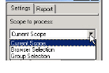
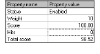

Settings Tab
The settings tab contains controls to set the scope and property values of selected queries.
The Scope to process list allows you to choose which source files you want to run your query against.

You can choose from the following options:
• Current Scope specifies all files within the model.
• Browser Selection specifies all selected files in the Results window.
• Group Selection specifies all files included in a selected group.
The Properties table allows you to view and set individual query properties.

You can choose from the following options:
• Status displays the status of the selected hit (new or removed).
• Weight displays the weight assigned to the selected query. Each query is assigned a weight that represents its relative importance to the Integrated Index of Quality. The more weight an item has, the greater its effect on the source code. The default weight for every item is 10.
• Hits displays the total number of hits found.
• Score displays the total quality score for the selected query or folder.
For Statistics Queries Only
• Threshold displays a numerical value that defines acceptable ranges for certain characteristics of your software. All threshold queries have default values. These threshold hits are instances where the threshold value was exceeded.
You can change property values by clicking the field and using the shortcut menu to toggle on the desired value or typing in the field.